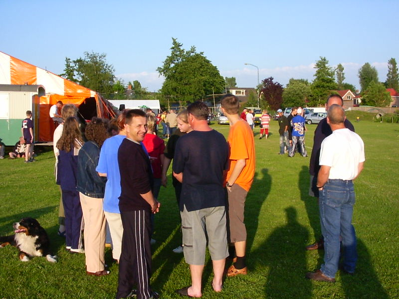
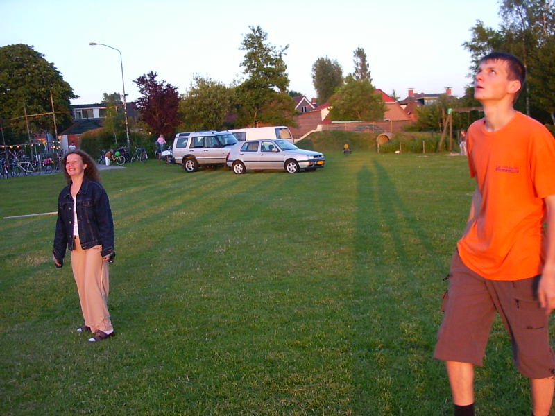
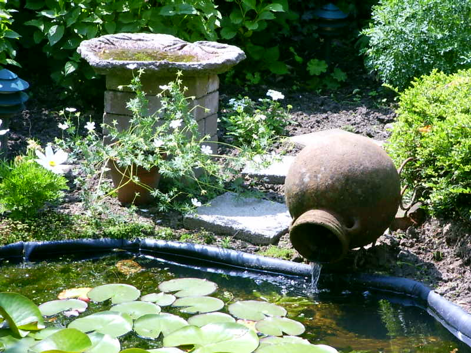
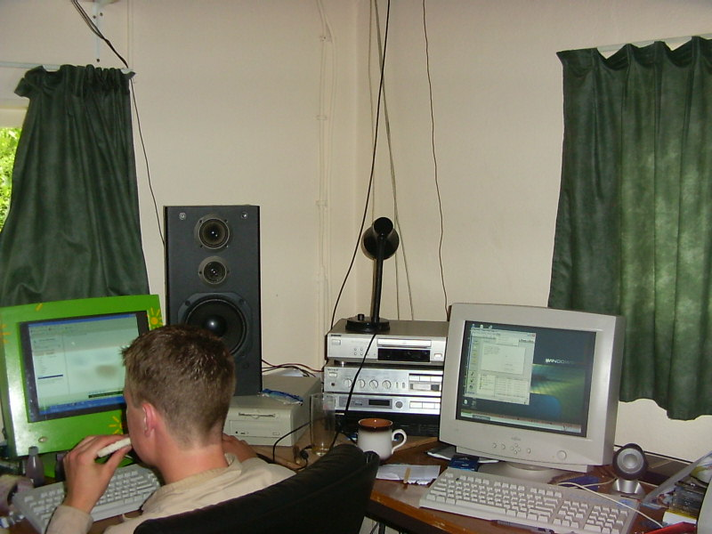

Netherlans Road Journal (Июнь 2003)
Нидерланды, день 2
Июнь 12, 2003
9804 PB NOORDHORN
HOLLAND
Dammit, как я рано встал! Аж в 6 часов! Правда, потом опять заснул:). Просто у них окна не закрываются шторами, поэтому было жуть как жарко. Перекусили (типа завтрак) и поехали завозить Ролинду в школу – пересдавать географию. Прикольно она повторила ее, после того как вчера провалила предмет, вернее будет сказать, не набрала нужное количество балов. Не школа, а целый универ по размерам. Когда ехали обратно, я заметил, что у них даже для велосипедистов есть проложенная дорожка. Даже светофоры есть отдельные, по которым они ориентируются! Если так посчитать, то на перекрёстке у них получается где-то около 8 светофоров.
Ездили ещё с одной семьёй из РБ смотреть, как фирма частника делает корабли! Оказалось, что эта фирма принадлежит двум чувакам. Всего на фирме работает пять человек! За год они выпускают две лодки (яхты), стоимостью 700 тыс. евро каждая!! Зашли к мужику в офис, показал нам видео про лодку в действии. Раздал буклетики, типа самореклама :).
После прогулки по фирме и по недостроенной яхте поехали к Ролинде в школу. Встретили её на улице с парнем, по-моему, её же парнем. Зашли внутрь. Походили немного. Кое-где ещё строятся коридоры. У детей нету занятий, так они сидят на полу и читают книги, видать зачёты :). Потом встретились с преподавателем по географии. Он сказал по-русски "здрасте". Отец немного поговорил с ним (через меня :-Р), ну типа Ролинда хорошая девушка, может она не так сильна в географии, но она очень хорошая и умная гёрла и т.п. Сфотографировались у школы на память (??).
Ещё я ездил в школу к Франсиске. Школа небольшая, но на каждый предмет есть свой отдельный кабинет. Мне понравился кабинет математики, там кто-то сделал граффити на стене, смотрится эффектно. На первом этаже в центре холла автомат по обмену денег, то есть суёшь кредитку, а тебе обратно евро, ну как всегда, а рядом стоят автоматы с различными напитками. Одним словом - бардак полнейший.
Ещё небольшой конверсейшн был с моими родителями. Может mp-3 купим =))).
Съездили ещё в бассейн. Просто младшей нужно было на тренировку. Пока смотрел, как люди плавают, еле не заснул от такой теплоты. Потом пошёл вокруг бассейна, чтобы сделать фотку, а когда возвращался некий мужик, с виду тренер, спросил: "Решил сфотографировать?". "Ну да", - отвечаю я. Минут 10 мы с ним поговорили. Про то, нравится мне тут или нет (ну ясный пень, что нравится!). Сказал, что слыхал про меня :). Аж приятно стало.
После усыпляющего бассейна поехали на "вечеринку-на-стадионе". Прикольно так. Кто-то играет в волейбол, кто-то играет в лото в шалаше, а кто-то просто глушит пиво.

Лото так вообще чудо: два жетона стоят одно евро, если выигрываешь, а шансы очень огромны, то тебе дают подарок стоимость около 20 евро. Выпил немного пива, а потом пошли играть в волейбол. Некие гёрлы всё ходили и смотрели, может русские? Не знаю даже… пока играли я замёрз, несмотря на то, что было около +25 градусов выше нуля ( по Цельсию :)).

После этой вечеринки, если её можно так назвать, пошли к другой голландской семье. У них наши соседи остановились. Я в прошлом году с их сыном программистом познакомился.

Зашёл я в комнату к младшему сыну. Бааа, дык это ж настоящее логово хакеров! Я бы тут жил, только есть подавай. Я так понял, они там и живут :). Представьте себе комнату 4х4 метров, в которой каким-то образом поместилась кровать, стол, три компьютера на нём и плюс ещё огромные колонки, которые dude подключил к звуковой карте. У них тоже Интернет 24 часа в сутки. Скорость 192 kb/s.

Не вылазит с Интернета :)
Говорит, что можно скачать фильм за два часа. Спрашивает "хочешь скачать чё-нибудь?". "Конечно", - отвечаю я. Запускаем прогу типа per2per – Kazaa. Вводим Offspring. Мелодий, конечно, он нашёл не очень, но начала скачивать single 'Defy You'. За минуту и 20 скачали 3.6 mb!
И у этого парня Windows XP. Да и вообще все проги последних версий. Запускает парень музыку с винампа (красивую такую электронную) и врубает колонки почти на всё мощность. Поворачиваем их к окну, хех, оно дрожит =). Потом я поднялся на второй этаж. Там парни в денди лабали :)). Ну парням по 12 и 9 лет :). Поговорил с Анжелой (она себе причёску изменила, не такая, какая была в прошлом году :)). Её тяжело остановить, она сама говорит, что любит болтать. Как начала, про музыку, так даже все диски перепробовала на проигрывателе, чтобы я послушал, какую она музыку любит. Спрашивала "правда ли, что татушки лесбиянки?". Ну, я сказал, что да, хотя сам точно и не уверен. Поболтали ещё часик, и потом я пошёл домой, завтра рано вставать.
Домой к нам пришла тётя, которую мы встретили в магазине вчера. Пригласила меня поиграть в теннис. Сама она из Кореи. Окей, говорю. Я ей покажу, как надо в теннис играть :).
Till next time,
Vadim_K
;void(0);){kind=link}
;void(0);){kind=link}
;void(0);){kind=link}
;void(0);){kind=link}